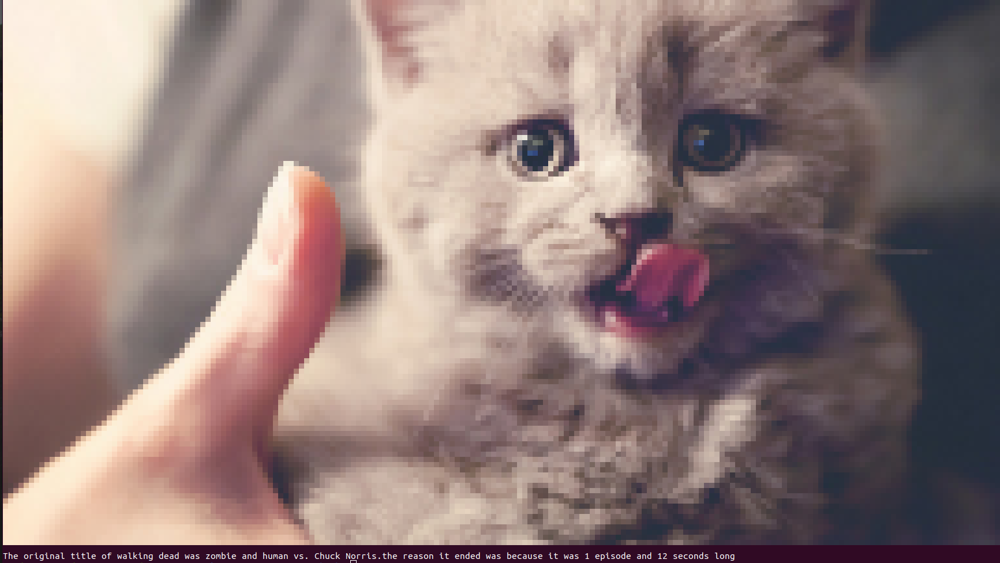

Bash - czyli powłoka systemowa unix
Bash - co to jest?
Język powłoki bash jest rozszerzeniem powłoki sh. Język basha umożliwia definiowanie aliasów, funkcji, zawiera konstrukcje sterujące przepływem (if, while, for, ...). Powłoka systemowa zachowuje historię wykonywanych poleceń i zapisuje ją domyślnie w pliku .bash_history w katalogu domowym użytkownika.
Moje użycie basha

Na 3 semestrze spotakłam się z powłoka bash. Prowadzący uczył nas jak wyciągać informacje o różncyh sygnałach lub procesach jakie dzieją się w trakcie użytkowania systemu linux. Jednym z zadań jakie realizowałam, bylo wysyłanie różnych sygnałów do wybranego procesu i sprawdzanie, czy wszystkie dojdą i czy się kolejkują. Robiliśmy to przy pomocy języka C. Cały kod można zobaczyć klikając tutaj.
Inne zadanie, które realizowałam z językiem bash było pobieranie losowego obrazka i cytatu z zadanej strony internetowej i wyświetlanie ich w terminalu. Cały kod możesz znaleźć tutaj. A jeśli chcesz przetestować kod wpisz w terminalu nano nazwa_pliku, skopiuj tam podany w linku kod, następnie zapisz plik. Musisz mu nadać uprawnienia wpisując: chmod a+x nazwa_pliku. Aby go uruchomić wystraczy, że wpiszesz w terminalu bash nazwa_pliku
Na zdjęciu mamy przykładowe uruchomienie
Strona napisana przez Magdalenę Jurkowską, 2023